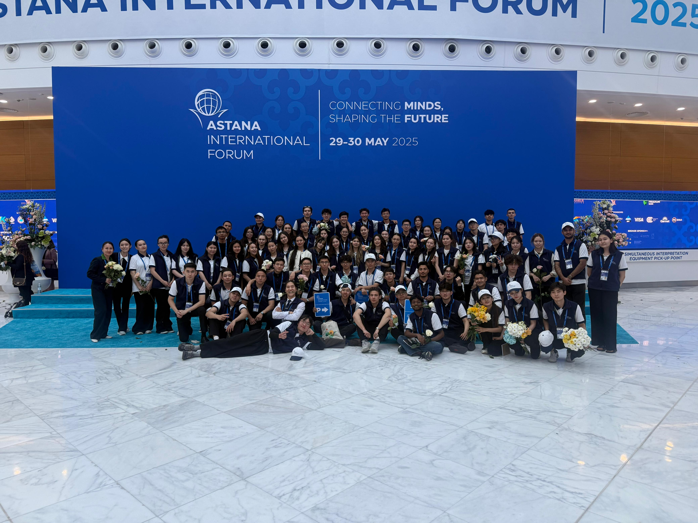

STAMP
{{ lv.level }}
{{ lv.name }}
{{ lv.tag }}- {{ it.n }}{{ it.d }}

{{ t.hero.sub }}
{{ t.what.sub }}
{{ t.quest.sub }}
{{ t.quest.badge }}
{{ t.quest.cta }}{{ t.types.sub }}
{{ t.teams.sub }}
{{ tm.d }}
{{ t.leave.before }}
{{ t.leave.after }}
{{ t.reg.sub }}